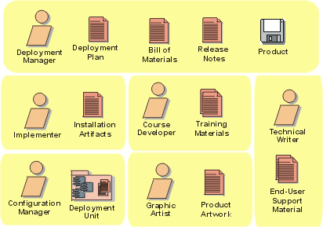

Deployment Artifact Set
The Deployment Artifact set captures and presents information
related to transitioning the system presented in the Implementation set into the
production environment.

Copyright
© 1987 - 2001 Rational Software Corporation
|  Artifacts >
Artifacts >
 Deployment Artifact Set
Deployment Artifact Set